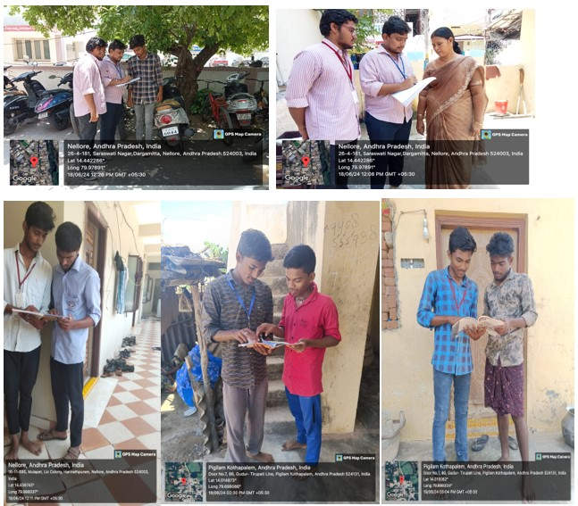

Created awareness on child labour and child education.
On day 1: We started the first day of the sixth week by conducting a small campaign on child education and their rights.
On day 2: We continued the survey on the second day and as part of our survey we focused on the following:
On day 3: Based on our survey and the information gathered by us, we found that some children are not going to schools and many people don’t know about government schemes provided for the children.
On day 4: Based on our survey outcome and its analysis, we planned for an awareness program in the area.
On day 5: On this day, we gathered some children and taught them about their rights and how education plays a role in their life.
On day 6: We interacted with people and they shared their thoughts on child labour. Many people are against child labour and all of them were aware of child rights and the importance of education.
